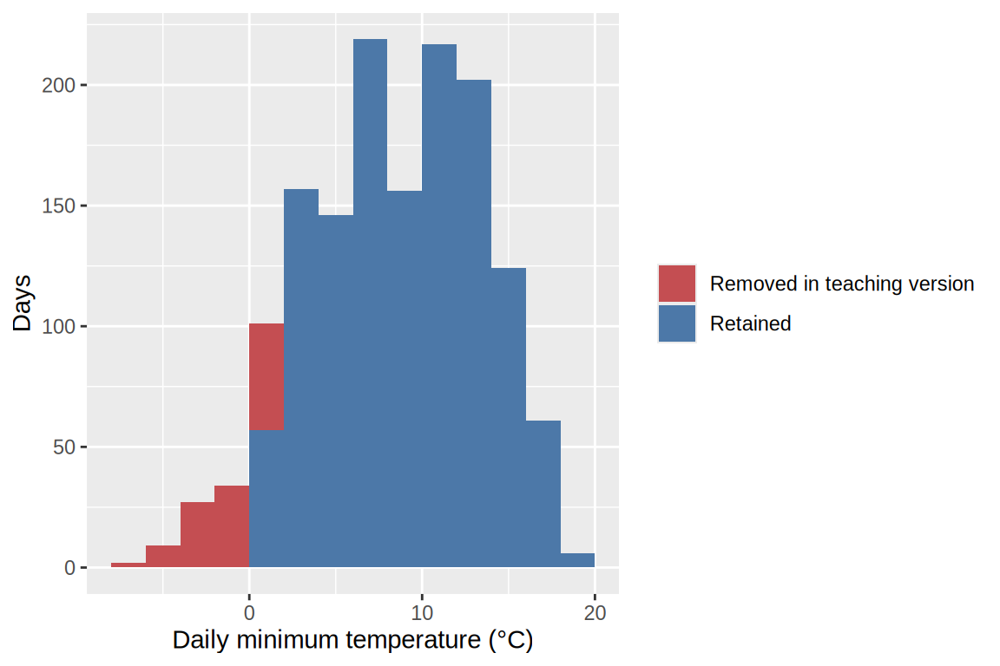
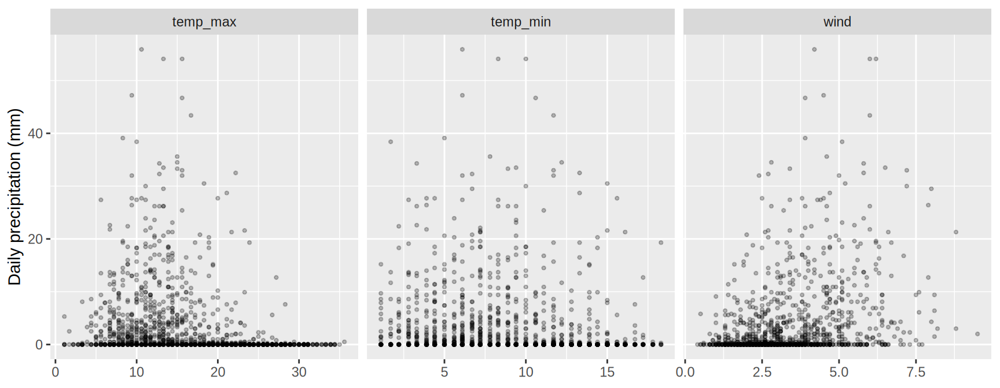

15 Exploratory data analysis
15.1 Why bother?
So far, we have learned how to represent observations, compare groups, and examine distributions. But when we receive a new dataset, we often don’t yet know which comparisons are worth making. We also don’t know whether the data mean what we think they mean. Let’s begin with a small mystery.
This is exploratory data analysis, or EDA: using inspection, visualization, and transformation to understand data and develop questions and explanations worth investigating. . Focused comparisons then help us investigate those observations. Neither step replaces the other.
A useful cycle is:
Form an expectation → inspect the data → notice agreement or surprise → choose a useful next check.
An expectation might come from a codebook, a known data-collection procedure, or ordinary knowledge of the subject. It is a starting point, not a fact we must force the data to obey. When something looks strange, either the data or our understanding could be wrong.
15.2 Understand what the data represent
Our example comes from the daily Seattle weather dataset distributed with vega-datasets. The original has 1,461 records covering 2012–2015. The teaching modification removes some temperature values, but keeps every row and the other measurements. The preparation and provenance are documented with the local data files.
One row represents one date in this Seattle weather series. It is not one resident, one weather event, or an average over all cities.
| Column | Meaning in this dataset |
|---|---|
date |
Date of the daily record |
precipitation |
Daily precipitation, in millimetres |
temp_max |
Daily maximum temperature, in degrees Celsius |
temp_min |
Daily minimum temperature, in degrees Celsius |
wind |
Wind speed, in metres per second |
weather |
A description such as rain, sun, or snow |
weather = pd.read_csv('data/seattle-weather-sensor.csv', parse_dates=['date'])
show_df(weather)| date | precipitation | temp_max | temp_min | wind | weather | |
|---|---|---|---|---|---|---|
| datetime64[us] | float64 | float64 | float64 | float64 | str | |
| 0 | 2012-01-01 | 0.0 | 12.8 | 5.0 | 4.7 | drizzle |
| 1 | 2012-01-02 | 10.9 | 10.6 | 2.8 | 4.5 | rain |
| 2 | 2012-01-03 | 0.8 | 11.7 | 7.2 | 2.3 | rain |
| ... | ... | ... | ... | ... | ... | ... |
| 1458 | 2015-12-29 | 0.0 | 7.2 | NaN | 2.6 | fog |
| 1459 | 2015-12-30 | 0.0 | 5.6 | NaN | 3.4 | sun |
| 1460 | 2015-12-31 | 0.0 | 5.6 | NaN | 3.5 | sun |
1461 rows × 6 columns
weather <- read_csv('data/seattle-weather-sensor.csv', show_col_types = FALSE)
show_df(weather)| date | precipitation | temp_max | temp_min | wind | weather | |
|---|---|---|---|---|---|---|
| date | dbl | dbl | dbl | dbl | chr | |
| 0 | 2012-01-01 | 0.0 | 12.8 | 5.0 | 4.7 | drizzle |
| 1 | 2012-01-02 | 10.9 | 10.6 | 2.8 | 4.5 | rain |
| 2 | 2012-01-03 | 0.8 | 11.7 | 7.2 | 2.3 | rain |
| ... | ... | ... | ... | ... | ... | ... |
| 1458 | 2015-12-29 | 0.0 | 7.2 | NaN | 2.6 | fog |
| 1459 | 2015-12-30 | 0.0 | 5.6 | NaN | 3.4 | sun |
| 1460 | 2015-12-31 | 0.0 | 5.6 | NaN | 3.5 | sun |
1461 rows × 6 columns
The first and last rows help us check the columns, values, and date range. They do not establish that everything between them is correct. For example, if we expect one record per day, we should check both that dates are unique and that dates are not missing. A correct total number of rows could conceal a missing day and a duplicated day.
expected_dates = pd.date_range('2012-01-01', '2015-12-31', freq='D')
pd.DataFrame({
'Check': ['Rows', 'Distinct dates', 'Expected dates without a row'],
'Result': [len(weather), weather['date'].nunique(),
len(expected_dates.difference(weather['date']))],
}) Check Result
0 Rows 1461
1 Distinct dates 1461
2 Expected dates without a row 0expected_dates <- seq(as.Date('2012-01-01'), as.Date('2015-12-31'), by = 'day')
tibble(
Check = c('Rows', 'Distinct dates', 'Expected dates without a row'),
Result = c(nrow(weather), n_distinct(weather$date),
sum(!expected_dates %in% weather$date))
)# A tibble: 3 × 2
Check Result
<chr> <int>
1 Rows 1461
2 Distinct dates 1461
3 Expected dates without a row 0All dates are present exactly once. That rules out one potential problem, but it does not tell us whether every measurement on those dates is present.
NoteAsk what a count counts
If a movie belongs to both Comedy and Animation, expanding its genre list creates two rows for one film. Those rows can be useful for counting genre memberships, but treating them as two independent films changes the interpretation. Likewise, repeated measurements from one person are not additional people. Count rows and the relevant observational units when the distinction matters.
15.3 Look broadly before focusing
An overview is not just a quick route to a final chart. It gives us a chance to notice unexpected features across the dataset. We will inspect three complementary things:
- The distribution of each variable.
- Relationships between variables.
- Where measurements are missing.
We can automate much of the chart construction, but we still need to decide what the columns mean and how to interpret each view. In particular, a numerical storage type does not make an identifier a numerical measurement worth putting in a histogram or correlation matrix.
A gallery of distributions
In Binned distributions and Smoothed distributions, we examined one or a few distributions at a time. Here we use a compact gallery to inspect several measurement columns together.
repeat applies one chart specification to several columns. alt.repeat() indicates where each column should be substituted. This differs from faceting: each panel below shows a different variable, rather than a subset of observations for the same variable.
measurements = ['precipitation', 'temp_max', 'temp_min', 'wind']
alt.Chart(weather).mark_bar().encode(
x=alt.X(alt.repeat(), type='quantitative', bin=alt.Bin(maxbins=20)),
y=alt.Y('count()', title='Recorded days'),
).properties(width=230, height=140).repeat(measurements, columns=2)We can reuse the faceting grammar by putting the selected measurements in a long table with a column identifying the variable. The panels use independent scales so that each distribution’s shape is readable, despite differences in measurement units, ranges, and bin counts.
measurements <- c('precipitation', 'temp_max', 'temp_min', 'wind')
weather_long <- weather |>
pivot_longer(all_of(measurements), names_to = 'variable', values_to = 'value')
ggplot(weather_long, aes(x = value)) +
geom_histogram(bins = 20, na.rm = TRUE) +
facet_wrap(~variable, scales = 'free', ncol = 2) +
labs(x = NULL, y = 'Recorded days')
These histograms show the recorded values; missing measurements are absent. We will account for them separately below. The bin settings provide a first look, not a final choice for every variable. If a feature matters to our interpretation, we should revisit that variable with appropriate bin widths in its own units. Read the axis values when comparing panels: equal-looking widths or heights need not represent equal ranges or counts.
Precipitation has many zero values and a long right tail. Here, zero precipitation is a plausible measurement: a dry day. That is different from a missing measurement of precipitation. The temperature distributions have a lower boundary worth investigating, especially given the suspicious minima in our opening chart.
Categorical variables also belong in the overview. A count plot of the weather descriptions reveals group sizes that a numerical summary or a numerical-only pairs plot would omit.
alt.Chart(weather, height=140).mark_bar().encode(
x=alt.X('count()', title='Days'),
y=alt.Y('weather:N', title='Weather description').sort('-x'),
)weather |>
count(weather) |>
ggplot(aes(x = n, y = reorder(weather, n))) +
geom_col() +
labs(x = 'Days', y = 'Weather description')
There are even records described as snow days. That makes the absence of recorded freezing minima worth a closer look, although the description alone does not establish the minimum temperature at the measurement location.
An overview of relationships
A scatterplot matrix, also called a pairs plot, lets us scan multiple relationships without choosing each one in advance. Look for clusters, unusual combinations, curved relationships, and changes in spread—not just straight-line associations.
We can repeat a scatterplot along both dimensions. Each row selects a y variable and each column selects an x variable. The diagonal compares each variable with itself, and the two triangles contain transposed versions of the same pairs.
alt.Chart(weather).mark_point(size=9, opacity=0.2).encode(
x=alt.X(alt.repeat('column'), type='quantitative').scale(zero=False),
y=alt.Y(alt.repeat('row'), type='quantitative').scale(zero=False),
).properties(width=110, height=110).repeat(
column=measurements,
row=measurements,
)The ggplot extension GGally supplies a convenient pairs-plot constructor. Here we request points for the lower triangle and histograms on the diagonal. The upper triangle is omitted to avoid repeating the same comparisons.
GGally::ggpairs(
weather,
columns = measurements,
upper = 'blank',
lower = list(continuous = GGally::wrap('points', alpha = 0.2, size = 0.5, na.rm = TRUE)),
diag = list(continuous = GGally::wrap('barDiag', bins = 20, na.rm = TRUE)),
progress = FALSE
)
The Python and R overviews package the information differently, but both support the same task: look across variables before selecting a detail. The positive association between minimum and maximum temperature is unsurprising. Their lower bounds and the triangular shape are more useful prompts for questions. Part of that shape is constrained by the definitions: a daily minimum cannot exceed the maximum for the same day.
Each pairwise panel uses the rows where its two measurements are present. Consequently, panels involving temperature can contain fewer observations than the precipitation–wind panel. An overview does not remove the need to check which observations contribute.
NoteAutomate repetition, retain control of the question
Faceting, repeating a specification, and composing plots programmatically are ways to reuse the grammar we already know. Specialized tools such as GGally and Altair Ally can also generate collections of suitable views. Use these tools to make broad inspection inexpensive. When a particular panel becomes important, return to a focused chart where you can adjust its variables, scales, bin widths, or grouping deliberately.
With many variables, use manageable batches or selected combinations. Twenty numerical variables already have 190 distinct pairs. A giant matrix can include every pair without making any pair large enough to inspect usefully.
15.4 Missing values are part of the data story
We have seen a pattern that might involve missing measurements. Even without that clue, missingness should be part of our initial inspection. There are two separate questions:
missing_summary = weather.isna().sum().rename('Missing').to_frame()
missing_summary['Recorded'] = len(weather) - missing_summary['Missing']
missing_summary['Missing (%)'] = 100 * missing_summary['Missing'] / len(weather)
missing_summary.round(1) Missing Recorded Missing (%)
date 0 1461 0.0
precipitation 0 1461 0.0
temp_max 5 1456 0.3
temp_min 116 1345 7.9
wind 0 1461 0.0
weather 0 1461 0.0weather |>
summarise(across(everything(), ~sum(is.na(.x)))) |>
pivot_longer(everything(), names_to = 'variable', values_to = 'Missing') |>
mutate(
Recorded = nrow(weather) - Missing,
`Missing (%)` = round(100 * Missing / nrow(weather), 1)
)# A tibble: 6 × 4
variable Missing Recorded `Missing (%)`
<chr> <int> <int> <dbl>
1 date 0 1461 0
2 precipitation 0 1461 0
3 temp_max 5 1456 0.3
4 temp_min 116 1345 7.9
5 wind 0 1461 0
6 weather 0 1461 0 There are 116 missing minimum temperatures and five missing maximum temperatures. The other columns are complete in this example. Those counts do not tell us whether the missing measurements occurred together or were concentrated in particular parts of the year.
The meaning of a missing value also requires context. It might represent a failed measurement, a question that was never asked, a refusal to answer, or a field that does not apply to that observation. A missing value can also be introduced by an unsuccessful join between tables. These situations can all end up encoded as NA, but they are not interchangeable. Conversely, an unknown value might be encoded as a number such as 999 and therefore escape a simple missing-value count. Check the definitions and processing history as well as the table.
Make the missingness pattern visible
We can create a table of indicators describing whether each cell is missing, then visualize those indicators with the same heatmap grammar used for other data. Here the horizontal axis represents actual dates, not an arbitrary row order.
missing_cells = (
weather.set_index('date').isna().reset_index()
.melt(id_vars='date', var_name='variable', value_name='is_missing')
.assign(
end_date=lambda d: d['date'] + pd.Timedelta(days=1),
status=lambda d: d['is_missing'].map({True: 'Missing', False: 'Recorded'}),
)
)
alt.Chart(missing_cells, width=560, height=130).mark_rect().encode(
x=alt.X('date:T', title='Date').axis(format='%Y', tickCount='year'),
x2='end_date:T',
y=alt.Y('variable:N', title=None),
color=alt.Color('status:N', title=None).scale(
domain=['Recorded', 'Missing'], range=['#dedede', '#c44e52']
).legend(orient='bottom'),
tooltip=['date:T', 'variable:N', 'status:N'],
)missing_cells <- weather |>
mutate(across(-date, is.na)) |>
pivot_longer(-date, names_to = 'variable', values_to = 'is_missing') |>
mutate(status = if_else(is_missing, 'Missing', 'Recorded'))
ggplot(missing_cells, aes(x = date, y = variable, fill = status)) +
geom_tile(width = 1, height = 0.9) +
scale_fill_manual(values = c(Recorded = '#dedede', Missing = '#c44e52')) +
scale_x_date(date_breaks = '1 year', date_labels = '%Y') +
labs(x = 'Date', y = NULL, fill = NULL)
The missing temperatures occur in colder parts of the year. This supports further investigation, but it does not identify the mechanism. A device problem, a reporting procedure, and a processing rule could all produce seasonally patterned missingness.
Follow the clue with a focused comparison
We create a new categorical variable that records whether the minimum is missing. That lets us compare the distributions of maximum temperature between the two groups. The five rows without a maximum temperature cannot contribute to this comparison; they remain accounted for in our missingness summary.
weather_status = weather.assign(
minimum_status=weather['temp_min'].isna().map(
{True: 'Minimum missing', False: 'Minimum recorded'}
)
)
alt.Chart(weather_status.dropna(subset=['temp_max']), height=100).mark_boxplot().encode(
x=alt.X('temp_max:Q', title='Recorded daily maximum (°C)').scale(zero=False),
y=alt.Y('minimum_status:N', title=None),
)weather_status <- weather |>
mutate(minimum_status = if_else(
is.na(temp_min), 'Minimum missing', 'Minimum recorded'
))
weather_status |>
drop_na(temp_max) |>
ggplot(aes(x = temp_max, y = minimum_status)) +
geom_boxplot() +
labs(x = 'Recorded daily maximum (°C)', y = NULL)
The recorded maxima are generally lower when the minima are missing. Notice how we arrived here: the opening summary raised a concern, the overview showed the pattern, and a relationship in the pairs plot suggested a useful follow-up variable. We did not have to specify this comparison before seeing the data.
Inspect combinations of categories
The weather description gives us another way to investigate missing minima. We can count the combinations of weather type and recording status, then compare the counts with proportions within each weather type. These answer different questions, as we saw in Counts & proportions.
status_counts = (
weather_status.groupby(['weather', 'minimum_status']).size()
.reset_index(name='days')
)
status_counts['proportion'] = (
status_counts['days'] / status_counts.groupby('weather')['days'].transform('sum')
)
tiles = alt.Chart(status_counts, width=210, height=150).mark_rect().encode(
x=alt.X('minimum_status:N', title=None).axis(labelAngle=0),
y=alt.Y('weather:N', title=None),
tooltip=['weather:N', 'minimum_status:N', 'days:Q',
alt.Tooltip('proportion:Q', format='.1%')],
)
counts = tiles.encode(
color=alt.Color('days:Q', title='Days').scale(scheme='blues').legend(orient='bottom')
).properties(title='Counts')
proportions = tiles.encode(
color=alt.Color('proportion:Q', title='Share within weather type')
.scale(domain=[0, 1], scheme='blues').legend(format='%', orient='bottom')
).properties(title='Within-type proportions')
alt.hconcat(counts, proportions).resolve_scale(color='independent')status_counts <- weather_status |>
count(weather, minimum_status, name = 'days') |>
group_by(weather) |>
mutate(proportion = days / sum(days)) |>
ungroup()
tiles <- ggplot(status_counts, aes(x = minimum_status, y = weather)) +
geom_tile() +
labs(x = NULL, y = NULL) +
theme(legend.position = 'bottom')
counts <- tiles +
aes(fill = days) +
scale_fill_gradient(low = '#f7fbff', high = '#08519c') +
labs(title = 'Counts', fill = 'Days')
proportions <- tiles +
aes(fill = proportion) +
scale_fill_gradient(low = '#f7fbff', high = '#08519c',
limits = c(0, 1), labels = scales::label_percent()) +
labs(title = 'Within-type proportions', fill = 'Share within weather type')
patchwork::wrap_plots(counts, proportions, nrow = 1)
WarningA pattern in missingness is not proof of its cause
In real data, we would now consult the collection procedure, processing code, or people who produced the measurements. The pattern is consistent with preferential loss of cold measurements, but it does not prove a faulty sensor. Likewise, failing to see a pattern would not prove that missingness is harmless.
Formal distinctions such as missing completely at random, missing at random, and missing not at random describe assumptions about how missingness depends on observed and unobserved values. We generally cannot establish those assumptions from a missingness plot alone.
Reveal the teaching modification
For this example, we know the mechanism because we created it: both minimum and maximum temperatures at or below 0.6°C were replaced with missing values. This simulates a reporting failure that removes low measurements; it is not evidence that the original weather station had that failure.
We retained the complete source values, so we can show something that is normally impossible in a missing-data problem: the distribution of the values that went missing.
complete_weather = pd.read_csv('data/seattle-weather-complete.csv', parse_dates=['date'])
reveal = complete_weather.assign(
status=(complete_weather['temp_min'] <= 0.6).map(
{True: 'Removed in teaching version', False: 'Retained'}
)
)
alt.Chart(reveal, width=450, height=220).mark_bar().encode(
x=alt.X('temp_min:Q', title='Daily minimum temperature (°C)', bin=alt.Bin(step=2)),
y=alt.Y('count()', title='Days'),
color=alt.Color('status:N', title=None).scale(
domain=['Retained', 'Removed in teaching version'],
range=['#4c78a8', '#c44e52'],
),
)complete_weather <- read_csv('data/seattle-weather-complete.csv', show_col_types = FALSE)
reveal <- complete_weather |>
mutate(status = if_else(
temp_min <= 0.6, 'Removed in teaching version', 'Retained'
))
ggplot(reveal, aes(x = temp_min, fill = status)) +
geom_histogram(binwidth = 2, boundary = 0, closed = 'left') +
scale_fill_manual(values = c(
Retained = '#4c78a8', 'Removed in teaching version' = '#c44e52'
)) +
labs(x = 'Daily minimum temperature (°C)', y = 'Days', fill = NULL)
The recorded-only mean minimum temperature is about 9.05°C; the complete-data mean is about 8.23°C. Even though only about 8% of minimum temperatures were removed, they came from one part of the distribution. Whether missingness matters depends on which values are missing and which question we ask, not just on the overall percentage.
Replacing the missing temperatures with zero would also be misleading: zero Celsius is a particular temperature, not a way to represent ignorance. Deleting entire rows would discard their valid precipitation and wind measurements too. Handling missing data requires a justified decision for the analysis at hand; this example does not establish a universally correct replacement rule.
15.5 Turn patterns into questions
The weather mystery is one example of a broader strategy: . Generating another plot is useful when you can explain what it will help you learn.
| Observation in an overview | Possible explanations | A useful next check |
|---|---|---|
| Two peaks | Subgroups, rounding, or display settings | Compare subgroups, inspect values, and vary bin width or bandwidth |
| An extreme value | A genuine unusual case, a unit mismatch, or an entry error | Inspect the record, related variables, and source documentation |
| A tall distribution for one group | More observations, not necessarily a different shape | Compare counts and within-group normalized distributions |
| A pooled association | Within-group relationships or differences between groups | Color or facet by a plausible grouping variable |
| More rows after a transformation | New observations or repeated memberships | Check distinct units as well as row counts |
There need not be a single correct follow-up. Its usefulness depends on which explanation you want to investigate. Sometimes the next step is to ask the data provider a question rather than draw a chart.
WarningCheck an anomaly before “fixing” it
An unusual value can be an error, but it can also be the observation that teaches us something important. Use units, definitions, related measurements, and provenance to investigate. Record any exclusions and their reasons. Do not remove a value simply because the resulting chart looks cleaner or the association becomes stronger.
15.6 Explore around a question or an outcome
So far, we have looked broadly and followed a surprise. Sometimes we begin with a more specific question, such as which recorded measurements are associated with precipitation. The basic checks still matter, but we can spend more attention on plots involving that outcome.
Instead of a square matrix containing every pair, we can create a gallery with the same outcome on one axis and several candidate variables on the other.
alt.Chart(weather).mark_point(size=14, opacity=0.25).encode(
x=alt.X(alt.repeat(), type='quantitative').scale(zero=False),
y=alt.Y('precipitation:Q', title='Daily precipitation (mm)'),
).properties(width=180, height=180).repeat(['temp_max', 'temp_min', 'wind'])The long-table approach also works when one variable is held fixed. We keep precipitation as the response column and pivot the candidate variables.
weather |>
pivot_longer(c(temp_max, temp_min, wind),
names_to = 'measurement', values_to = 'value') |>
ggplot(aes(x = value, y = precipitation)) +
geom_point(alpha = 0.25, size = 0.8, na.rm = TRUE) +
facet_wrap(~measurement, scales = 'free_x', nrow = 1) +
labs(x = NULL, y = 'Daily precipitation (mm)')
The pile-up at zero precipitation, the spread of wet-day values, and unusual combinations are all relevant features—not just the overall direction. These plots describe same-day associations among the recorded measurements. They do not tell us that changing the wind would cause rain, or that today’s completed measurements would be available for a morning forecast.
If the outcome is categorical instead, we can compare predictor distributions within its categories, or inspect counts and proportions for combinations of categorical variables. There is no reason to turn a category code into a quantitative variable just to put it in a correlation matrix.
15.7 What have we learned, and what remains unresolved?
EDA does not have to end with a striking discovery. Finding a data limitation, ruling out an explanation, or recognizing that the available variables cannot answer the question can be a useful result.
For our weather investigation, a short record could be:
| Stage | What we learned |
|---|---|
| Initial observation | Every year’s lowest recorded minimum is 1.1°C. |
| Broad inspection | The lower temperature range is absent, although all dates are present. |
| Missingness overview | Missing temperature measurements are concentrated in colder months. |
| Focused comparison | Missing minima tend to occur on days with lower recorded maxima. |
| Mechanism check | The teaching preparation removed temperatures at or below 0.6°C. |
| Revised conclusion | The incomplete data cannot establish that freezing days were absent; their temperature summaries describe a selected subset of measurements. |
In a real investigation, the mechanism-check row might still say “unresolved”. That is more informative than quietly assuming a cause and proceeding.
You do not need to publish every chart made during exploration. Keep enough of the analysis history to explain important decisions, and communicate the evidence relevant to the final question. Useful stopping points include having enough evidence for the current decision, or discovering that the next step requires information outside the dataset.
For your next dataset, try leaving a short trail of reasoning:
What did I expect? What did I observe? What could explain it? What did I check next? What can I now conclude?
15.8 Further reading
- Wickham, Çetinkaya-Rundel, and Grolemund, R for Data Science, Chapter 10: Exploratory data analysis. A question-driven cycle of visualization, transformation, and follow-up, with R examples.
- Peng and Matsui, The Art of Data Science, Chapter 4, especially “Always be Checking Your n’s” and “Challenge Your Solution.”
- Wongsuphasawat, Liu, and Heer (2019), Goals, Process, and Challenges of Exploratory Data Analysis: An Interview Study. Describes how analysts combine data-quality assessment, discovery, and automated overviews.
- Emerson and colleagues, The Generalized Pairs Plot. Explains how a matrix of appropriate displays can reveal relationships among mixed variable types.
- Waskom, Visualizing distributions of data and Building structured multi-plot grids. Python examples connecting representation choices with exploratory tasks.